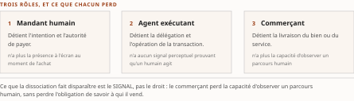
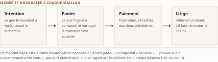

Chapitre 10Transaction et infrastructure : AP2 et AGNTCY
Livre I — Coopérer : fondements de l'interopérabilité et couche protocolaire agentique. Second mouvement — la couche protocolaire agentique (ch. 7-11)
Une institution ne s'intéresse vraiment à un protocole d'interopérabilité que le jour où celui-ci touche à l'argent ou à l'infrastructure. Les deux objets de ce chapitre occupent précisément ces deux extrémités. Le protocole de paiement agentique se tient au point où la délégation à un agent cesse d'être une affaire d'ingénierie pour devenir une affaire de responsabilité : la transaction. La couche d'infrastructure se tient à l'autre bout, là où des agents se découvrent et s'échangent des messages avant même de savoir ce qu'ils feront ensemble. Entre les deux se glisse un troisième objet, dont ce chapitre tire la portée de risque — l'ACP protocolaire, dont le ch. 8 § 8.5.1 a raconté la mécanique de disparition.
La thèse de ce chapitre doit être décomposée avant d'être employée, car ses deux moitiés n'ont pas le même statut de preuve, et les fondre serait la faute que ce chapitre prend pour objet. Que la transaction agentique constitue l'aboutissement financier de la pile protocolaire est une lecture d'auteur : les sources établissent que le protocole de paiement est un protocole compagnon de l'axe agent-agent, dédié aux transactions pilotées par agents, et rien de plus sur sa centralité. Qu'AGNTCY soit une couche d'infrastructure et non un concurrent est, pour sa part, le positionnement officiel déclaré du projet — une déclaration, non un fait vérifié, et que des analyses tierces viennent nuancer. Une lecture d'auteur et une déclaration de partie intéressée ne sont pas du même ordre, et aucune des deux n'est un fait établi.
Ce chapitre porte en outre huit énoncés d'absence — autant d'occurrences de l'échelle à trois degrés du Vol. III —, et l'une d'elles est d'un genre que les neuf chapitres précédents n'ont pas rencontré : deux volumes rédigés du corpus n'y disent pas la même chose. Le § 10.1.3 lui est consacré.
§ 10.1AP2 : la transaction pilotée par agents
Thèse à statut déclaré. Ce qui suit n'établit pas qu'AP2 soit central dans la pile. Il établit qu'un protocole compagnon existe, qu'il a une date, un décompte de soutiens déclarés et un dossier de gouvernance discuté. La centralité, elle, est une lecture — celle de la thèse, marquée comme telle.
10.1.1 Les faits et l'intervalle
Les faits sont peu nombreux, et il faut résister à la tentation de les étoffer. Le protocole de paiement agentique — AP2, Agent Payments Protocol — a été lancé en septembre 2025, l'annonce publique du fournisseur infonuagique qui le porte étant datée du 16 septembre 2025, comme protocole compagnon du protocole agent-agent, dédié aux transactions pilotées par agents.
La filiation est explicite et elle éclaire le découpage du Livre : là où le protocole agent-agent régit la délégation de tâches entre pairs (ch. 8 § 8.4), AP2 s'attache à ce qui se passe lorsque la tâche déléguée engage un paiement. Ce n'est pas un protocole concurrent ; c'est un protocole qui prend le relais au point où la délégation cesse d'être réversible.
Posons l'intervalle, car il est la seule quantité que les sources permettent de calculer ici. De l'annonce du 16 septembre 2025 au communiqué de la fondation faîtière du 9 avril 2026 qui en publie les soutiens, il s'écoule moins de sept mois. Moins de sept mois après son annonce, un protocole de paiement compte plus de soixante déclarations de soutien — si l'on en croit le communiqué qui les rapporte.
Lecture d'auteur. Les sources n'enregistrent aucun décompte au lancement d'AP2 — à la différence du protocole agent-agent, dont le ch. 7 § 7.6 a pu donner les deux bornes, plus de cinquante au départ et plus de cent cinquante en avril 2026. Aucune dynamique de croissance ne peut donc être tirée de ce chiffre unique : un décompte sans point de départ mesure un état, jamais une pente. C'est la différence entre « soixante organisations soutiennent » et « soixante organisations se sont ralliées ». La seconde formule est indue et ce chapitre ne l'emploie pas.
10.1.2 La métrique des soixante : un endossement, pas une production
Sur l'adoption, les sources fournissent un chiffre et une liste. Selon le communiqué de la Linux Foundation, fondation faîtière du protocole, daté du 9 avril 2026, plus de soixante organisations des paiements et des services financiers déclarent leur soutien au protocole.
Ce chiffre est auto-déclaré et il est attribué ici à sa source, comme il doit l'être à chaque occurrence (PRD du Vol. II §8.2.1). Le soutien déclaré ne vaut pas déploiement en production. La réserve attachée à l'entrée du socle est explicite sur ce point : il s'agit d'un endossement déclaré, non d'une adoption en production vérifiée. Le ch. 7 § 7.6 a posé la règle de lecture pour toute la somme ; ce chapitre l'applique sans l'assouplir.
Le grief central que le ch. 7 adressait aux décomptes d'« organisations de soutien » — l'unité n'en est pas définie — vaut intégralement ici. Une organisation qui a signé un communiqué et une organisation qui a livré une intégration comptent pour un, et le communiqué ne les distingue pas.
Un fait de re-datation s'ajoute depuis le franchissement de G-3, et il durcit la réserve sans l'annuler. L'entrée S-004 du socle consolidé a été portée à sa source primaire le 28 juillet 2026 : le lancement de septembre 2025 y est confirmé, mais le décompte lui-même n'a pas été retrouvé à la page — absence de documentation, R-14 degré 3. ⚠ Ce n'est ni un démenti ni un retrait : c'est un chiffre dont la source citable, à ce jour, demeure le communiqué d'avril 2026 et lui seul. Un décompte qu'on ne retrouve plus à sa source n'est pas devenu faux ; il est devenu invérifiable, ce qui est un état différent et qui doit se dire.
Mais un élément que les sources fournissent change la portée de la lecture, et il mérite d'être posé sans être durci. Sept de ces organisations sont nommées par le communiqué, et ce sont des réseaux de paiement et des émetteurs — c'est-à-dire, précisément, les acteurs sans lesquels aucune transaction agentique ne peut aboutir.
Lecture d'auteur. Sept noms d'infrastructures de paiement sont qualitativement plus informatifs qu'un décompte entièrement anonyme — non parce qu'ils prouvent un déploiement, mais parce qu'ils identifient qui aurait à bouger. ⚠ La restriction est stricte : les sources établissent ces sept noms ; elles n'établissent ni la liste complète des soutiens déclarés, ni que ces organisations aient bougé. Cinquante-trois soutiens au moins ne sont pas identifiables, et un chapitre qui écrirait « liste nominative » aurait embelli sa source.
Un second décompte auto-déclaré traverse ce chapitre, et il n'est pas comparable au premier : celui de la couche d'infrastructure, examiné au § 10.2.1. Plus de huit mois séparent les deux relevés — juillet 2025 pour l'un, avril 2026 pour l'autre. Les mettre côte à côte dans un tableau produirait un classement que rien ne fonde. Deux métriques auto-déclarées à des dates différentes ne forment pas une comparaison ; elles forment deux instantanés.
10.1.3 La gouvernance : le point où deux volumes rédigés ne disent pas la même chose
Section d'arbitrage de provenance. C'est le passage le plus délicat du chapitre, et peut-être du Livre. Il ne tranche pas un fait : il expose deux états de connaissance datés et en tire une règle de lecture. Un compendium qui lisserait cette divergence en choisirait une — silencieusement.
Ce que le Vol. II établit. Ses sources, gelées au 16 juillet 2026, ne documentent aucun transfert de gouvernance du protocole de paiement vers une fondation. Le volume qualifie lui-même cet énoncé avec une précision qui mérite d'être reprise mot à mot : ce n'est pas un fait négatif vérifié — lequel exigerait une recherche exhaustive et infructueuse dans les textes officiels — mais une absence de documentation dans le socle, ce qui est plus faible, et doit se dire tel quel.
Échelle à trois degrés du Vol. III (R-14), degré 3. Absence de documentation — le degré le plus faible des trois. Ni fait négatif vérifié, ni fait négatif établi. La distinction n'est pas rhétorique : elle décide de ce qu'une institution peut inscrire dans un dossier de diligence raisonnable. « Nous n'avons pas trouvé » et « il n'y en a pas » n'engagent pas la même responsabilité.
Ce que le Vol. I établit. Ses sources, gelées en juin 2026 — donc antérieures à celles du Vol. II —, portent le transfert comme un fait daté et sourcé : le protocole de paiement a été transféré à la FIDO Alliance le 28 avril 2026, dans une version v0.2 prenant en charge le cas Human-Not-Present, avec un standard d'intention vérifiable codéveloppé avec un réseau de cartes, et non vers la fondation faîtière qui héberge les protocoles agent-outil et agent-agent. Le même volume ajoute que la fondation d'authentification a constitué deux groupes de travail techniques dédiés — l'un sur l'authentification agentique, l'autre sur les paiements —, dont la coprésidence du second revient à deux réseaux de cartes.
Ces deux énoncés ne se contredisent pas, et c'est le point. « Le socle du Vol. II ne documente pas X » et « le Vol. I documente X » sont logiquement compatibles : le premier décrit un corpus de sources, le second décrit un événement. Une absence de documentation dans un socle donné n'est pas une négation. C'est exactement pourquoi le Vol. II a pris soin d'écrire « absence de documentation » et non « aucun transfert n'a eu lieu » — la formulation faible avait raison.
Trois conséquences, dans l'ordre où un lecteur en a besoin.
(1) Ce que ce chapitre écrit. Le transfert a d'abord été porté ici comme fait documenté par le Vol. I, au régime [C] que la refonte du socle imposait à toute entrée venue de ce volume — donc à instruire à la source primaire. ⚠ Cette instruction a eu lieu, et c'est ce que le franchissement de G-3 change à cette sous-section. L'entrée S-090 du socle consolidé porte désormais le transfert au niveau [A], constaté au billet officiel du 28 avril 2026 de l'organisation cédante — transfert de propriété au cessionnaire nommé, version v0.2, cas Human-Not-Present. Le fait n'est donc plus un repérage à instruire : il est instruit. Il reste néanmoins écrit non comme une propriété générale du protocole (« le protocole de paiement est gouverné par une fondation neutre ») mais comme un événement daté attribué à sa source.
(2) Ce que devient l'énoncé du Vol. II. Il reste exact à sa date et dans son périmètre : son socle, tel que constitué, n'en portait pas la documentation. ⚠ Un socle qui ne documente pas un événement antérieur à son propre gel signale une lacune de couverture, non une erreur de fait — et c'est ainsi que la lacune est déjà enregistrée au registre du Vol. II. Le corriger après coup effacerait l'information que cette lacune porte : ce que le volume savait, au moment où il l'a écrit. ⚠ Le socle consolidé le tient d'ailleurs pour tel : S-004 et S-090 y coexistent sans arbitrage, la première portant en toutes lettres qu'elle ne documente pas le transfert que la seconde établit. Deux entrées d'un même socle peuvent se compléter sans se contredire ; les fondre en aurait effacé une.
(3) Ce que ce chapitre corrige de sa propre série. ⚠ Le ch. 7 § 7.4.2 et § 7.6 ont écrit, sur ce même objet, « annoncé, non vérifié au socle », en suivant le plan et le Vol. II — alors que le §3.13.1 du Vol. I, qui est l'une des sources de ce chapitre-là, portait déjà le transfert comme fait daté. C'est un défaut de couverture de source du ch. 7, non une divergence entre volumes, et il est corrigé à sa place ; la remontée R-IV-12 du § 10.7 en porte la trace.
Lecture d'auteur. Le raisonnement du ch. 7 § 7.4 — la gouvernance neutre transforme la question de diligence en question de constat — s'étend donc bien au protocole de paiement, mais par une seconde fondation, spécialisée dans l'authentification, et non par la faîtière. ⚠ La conséquence n'est pas décorative : elle confirme que l'écosystème se fédère autour de plusieurs pôles de gouvernance distincts, organisés par axe, ce que le ch. 7 § 7.4.2 avait déjà posé comme trait structurant. La question de diligence ne devient pas « ce protocole est-il sous fondation ? » mais « sous laquelle, et cette fondation a-t-elle compétence sur l'axe concerné ? ».
10.1.4 Ce que ce chapitre ne peut pas écrire : l'anatomie absente
Il faut dire, avec autant de netteté que le reste, ce que ce chapitre est hors d'état d'écrire.
Aucune anatomie technique complète du protocole de paiement n'est portée par le socle du Vol. II : ni structure des messages, ni mécanique de mandat, ni modèle de preuve d'intention. R-14, degré 3 — absence de documentation. Le ch. 8 peut décrire le protocole agent-outil et le protocole agent-agent parce que la matière y est ; ce chapitre ne le peut pas au même grain pour AP2, et s'y refuse plutôt que d'emprunter à une connaissance non tracée. C'est une lacune assumée, et le plan la déclare comme telle.
Le Vol. I comble partiellement cette lacune, et la mesure de ce « partiellement » importe. Il porte la chaîne de mandats — Intent Mandate, Cart Mandate, Payment Mandate — matérialisés comme attestations vérifiables signées au sens de la recommandation du consortium du web. ⚠ R-02 du Vol. III : cette chaîne démontre qu'un consentement peut être matérialisé en objet portable et signé, séparément du rail qui le règlera ; elle ne démontre pas que le consentement ainsi matérialisé corresponde à l'intention réelle du mandant — le § 10.3.4 y revient, et c'est le verrou du domaine.
Le découplage prend ici une forme concrète, et c'est l'invariant du Livre qui se rejoue. Un mandat de panier signé est portable indépendamment du rail de règlement aval : émis dans un contexte, il peut être présenté à des réseaux de paiement distincts. Le contrat de consentement est découplé du contrat de mouvement de fonds — ce qui prépare l'interopérabilité avec les rails de cartes (§ 10.3.3) et les paiements machine-natifs (§ 10.3.4).
Une seconde lacune, et elle n'est pas du même degré. L'articulation du protocole de paiement avec les rails de paiement nationaux d'un marché donné — le cas canadien est celui que le Vol. II instruit — n'est documentée par aucune source de son socle : absence de documentation (R-14, degré 3), traitée par ce volume dans un chapitre explicitement prospectif. La somme héritera cette lacune telle quelle ; elle ne se comble pas par une source de moindre qualité.
§ 10.2AGNTCY : la couche d'infrastructure
10.2.1 Faits, dates et le décompte de juillet 2025
La couche d'infrastructure agentique — AGNTCY — a été ouverte en mars 2025 par un équipementier de réseau, avec un éditeur de cadriciel d'orchestration et un éditeur d'outillage d'évaluation, puis placée sous la fondation faîtière le 29 juillet 2025 — soit quatre mois plus tard. Ses membres formateurs sont cinq : l'équipementier initiateur, un constructeur de matériel, la division infonuagique d'un grand fournisseur de recherche et de services, un éditeur de bases de données et un éditeur de distribution ouverte.
Le communiqué de la Linux Foundation du 29 juillet 2025 fait état de plus de soixante-cinq entreprises déclarant leur soutien au projet. ⚠ Chiffre auto-déclaré, attribué ici à ce communiqué et daté de juillet 2025 ; il ne vaut pas plus déploiement en production que celui du § 10.1.2 (PRD du Vol. II §8.2.1). ⚠ Les sources n'enregistrent aucune actualisation ultérieure de ce décompte, et la re-datation du 28 juillet 2026 ne l'a pas davantage retrouvé à sa page source — absence de documentation dans les deux cas, R-14 degré 3, et non un plafonnement constaté ni un retrait. Le sort de ce décompte est donc celui du § 10.1.2, à quoi s'ajoute ici que la mention d'une composante ACP est elle aussi absente des pages consultées : la lacune du § 10.2.3 n'en est pas comblée pour autant — une absence sur deux pages n'est pas un retrait.
Il serait donc fautif de comparer ce chiffre à ceux d'avril 2026, examinés au ch. 7 § 7.6 et au § 10.1.2 : plus de huit mois séparent les relevés, et aucune évolution du décompte de la couche d'infrastructure n'est documentée. Un tableau qui alignerait « 65+ », « 60+ » et « 150+ » sur une même colonne suggérerait une hiérarchie que les dates interdisent de lire.
10.2.2 Annuaires et transport : un vocabulaire d'infrastructure
Le contenu du projet, tel que les sources le portent, tient en deux capacités :
- des annuaires de découverte (discovery directories) ;
- un transport nommé SLIM.
C'est un vocabulaire d'infrastructure, non d'application : découvrir quels agents existent, et acheminer ce qu'ils s'envoient. Ces deux capacités atterrissent respectivement dans les deux sections que le Livre leur a déjà réservées — la découverte au ch. 9 § 9.1.4, qui traite les annuaires et services de noms sur son versant protocolaire, et le transport au ch. 9 § 9.2, qui pose l'étagement de la pile.
Les sources n'en disent pas davantage : ni spécification, ni statut de maturité, ni version. Absence de documentation (R-14, degré 3). Ce chapitre s'en tient là, et ne complète pas de mémoire. Une couche d'infrastructure dont on ne connaît ni la version ni le statut de maturité n'est pas évaluable au sens de la matrice du ch. 9 § 9.2.5 — et c'est une information en soi.
10.2.3 Le positionnement déclaré, et ce qui le nuance
Le positionnement officiel du projet est celui d'une couche interopérable avec les protocoles agent-outil et agent-agent, non concurrente.
Cette formule est une déclaration du projet, et doit être lue comme telle. Elle relève de la même catégorie que les métriques auto-déclarées du § 10.2.1, et les sources ne la valident pas. Un projet qui déclare ne concurrencer personne énonce une intention, pas une propriété observable.
Un élément de contexte se lit dans le rapprochement de deux faits, et il mérite d'être posé avec son pas d'inférence rendu visible. La division infonuagique qui figure parmi les membres formateurs de la couche d'infrastructure appartient au même groupe que l'organisation qui a lancé le protocole agent-agent puis le protocole de paiement. ⚠ Les sources nomment ces deux entités séparément et n'établissent pas formellement leur rattachement ; l'identification est un pas d'auteur, et il est marqué comme tel.
Lecture d'auteur. En tenant la division pour une composante du groupe, un même groupe se trouve des deux côtés : créateur des protocoles d'échange, membre formateur de la couche d'infrastructure. Cette double présence est cohérente avec la thèse de la complémentarité, et c'est ainsi qu'on la lira dans les documents promotionnels. ⚠ Mais la cohérence n'est pas une preuve. Les sources établissent une composition de membres et un positionnement déclaré ; elles n'établissent ni que les deux couches soient effectivement complémentaires dans les faits, ni qu'elles le resteront.
Et les sources portent un second élément, qui va dans l'autre sens. Des analyses tierces relèvent un chevauchement entre la composante ACP d'AGNTCY et le protocole agent-agent.
Cette observation n'est pas endossée par le socle : c'est un constat de tiers, attribué comme tel et non vérifié en source primaire. Elle ne permet pas d'endosser le chevauchement comme un fait ; elle suffit à rappeler que le positionnement « non concurrent » demeure une position déclarée du projet, que des analyses tierces viennent nuancer. ⚠ Que ces analyses contestent le positionnement lui-même n'est pas établi — relever un chevauchement et contester une déclaration sont deux gestes distincts, et la source ne porte que le premier.
Cette observation ouvre le dossier terminologique le plus délicat de la somme, dont le siège est au ch. 7 § 7.5 ; le § 10.5.3 en tire ce qui revient à ce chapitre.
§ 10.3Interopérabilité du commerce et des paiements agentiques
10.3.1 Le problème d'interopérabilité propre au commerce agentique
La couche économique de la pile constitue une nouveauté propre à cette génération : elle est absente du premier mouvement du Livre, qui supposait l'achat médié par une interface humaine porteuse de ses propres signaux de confiance. Lorsque l'acteur déclencheur d'une transaction devient un agent autonome, la chaîne découverte → autorisation → règlement doit être reconstruite sur des fondations machine-vérifiables.
La proposition organisatrice de cette section tient en une dissociation. Le commerce agentique disjoint trois rôles que le commerce électronique classique fusionnait dans une seule présence à l'écran :
| Rôle | Ce qu'il détient | Ce qu'il n'a plus |
|---|---|---|
| Mandant humain | l'intention et l'autorité de payer | la présence à l'écran au moment de l'achat |
| Agent exécutant | la délégation et l'opération de la transaction | tout signal perceptuel prouvant qu'un humain agit |
| Commerçant | la livraison du bien ou du service | la capacité d'observer un parcours humain |
Tableau 10.1 — Les trois rôles que le commerce agentique dissocie, et ce que la dissociation fait disparaître de chaque côté.
Cette dissociation fait disparaître les signaux de confiance hérités du parcours humain — le défi d'authentification forte à trois domaines, l'épreuve de reconnaissance, la frappe au clavier observable — qui présupposaient tous une personne présente.
Le problème d'interopérabilité devient alors celui de prouver de façon machine-vérifiable trois propriétés distinctes :
- l'intention — le mandant a-t-il voulu cet achat ? ;
- l'autorité — l'agent a-t-il le droit de l'engager, et dans quelles limites ? ;
- l'identité — l'agent est-il bien celui qu'il prétend être ?
Ces trois propriétés ne sont pas nouvelles ici : le ch. 9 § 9.1 les a rencontrées sous l'angle de la découverte, où trouver un agent ne sert à rien si l'on ne peut établir qui il est. Le commerce en fait la condition de la transaction, ce qui en durcit l'exigence : une erreur d'identité y a un coût libellé. ⚠ La troisième d'entre elles seule — l'identité — est celle que le Livre II reprendra comme identité composite, à au moins trois entités distinctes à identifier et à relier. Trois propriétés à prouver et trois entités à identifier ne sont pas la même triade, et les confondre ferait croire que la seconde répond à la première.
L'architecture qui se dégage décompose le besoin en trois sous-couches, que les sections suivantes parcourent dans l'ordre : la découverte et le paiement en caisse (trouver le produit, constituer un panier interopérable), l'autorisation et le mandat (matérialiser le consentement vérifiable), et le règlement (mouvementer la valeur).
Cette stratification reprend, dans le registre marchand, la logique d'étagement défendue par tout le Livre (ch. 9 § 9.2) : aucun protocole ne couvre seul les trois couches, et leur composition est l'enjeu d'interopérabilité.
Perspective de recherche. Une position publiée cadre le commerce comme cas limite de coordination économique entre acteurs autonomes : la confiance n'y serait plus une propriété d'interface mais une propriété de protocole, à reconstruire par des preuves portables — attestations vérifiables, mandats signés — puisque les signaux perceptuels du parcours humain ne sont plus disponibles. ⚠ Cadre d'analyse, non fait établi.
10.3.2 Paiement en caisse et mandats : l'ACP commercial et le protocole de commerce universel
Convention de nomenclature, rappelée ici comme à chaque occurrence (R-8 du Vol. II, R-13 du Vol. III). L'ACP commercial désigne le protocole de commerce agentique publié en septembre 2025 par un éditeur de modèles et un fournisseur de paiement — à ne pas confondre avec l'ACP protocolaire, sur l'axe agent-agent, dont le ch. 8 § 8.5.1 a traité la mécanique de fusion et dont le § 10.5 tire la portée de risque. Le siège de l'encadré des quatre branches est au ch. 7 § 7.5 ; il n'est pas reconstruit ici.
L'ACP commercial. Publié sous licence permissive le 29 septembre 2025, il spécifie une interface de paiement en caisse et un mécanisme de paiement délégué reposant sur un jeton de paiement partagé. Il a sous-tendu une fonction d'achat immédiat dans un assistant conversationnel grand public, dont la spécification connaît plusieurs révisions datées successives.
La trajectoire ultérieure illustre la volatilité des contrats commerciaux agentiques, et c'est l'enseignement de la sous-section. L'orientation produit de l'éditeur a évolué vers un modèle davantage centré sur les applications — signe que la couche commerce reste mouvante là où la couche protocolaire se stabilise. Le ch. 7 § 7.3 a montré dix-sept mois de consolidation protocolaire ; la couche marchande, elle, n'a pas connu cette consolidation, et rien n'indique qu'elle la connaîtra au même rythme.
Le protocole de commerce universel. Annoncé en janvier 2026 avec des distributeurs majeurs, il couvre découverte, panier, achat et suivi sur les transports d'interface applicative classique, du protocole agent-agent et du protocole agent-outil, en compatibilité affichée avec le protocole de paiement du § 10.1. ⚠ « Compatibilité affichée » est une déclaration de projet, du même ordre que celle du § 10.2.3 ; il est mentionné ici en renvoi, comme couche de découverte et de paiement en caisse complémentaire des mandats, et non comme un objet dont ce chapitre porterait l'anatomie.
Lecture d'auteur. Trois protocoles de commerce coexistent sur la même fonction — constituer un panier et le faire payer par un agent — sans qu'aucune source n'établisse de convergence entre eux, à la différence de ce que le ch. 8 § 8.5.1 a documenté sur l'axe agent-agent. ⚠ Cette absence de convergence documentée n'est pas une prédiction de fragmentation durable : c'est un état à une date, et le Livre a vu, sur l'axe protocolaire, une fusion survenir en cinq mois.
10.3.3 Rails de cartes et authentification d'agent : un tableau daté
Le tableau de cette sous-section est un instantané et se périme en bloc. Son intérêt tient à ce qu'il situe chaque initiative à une date ; il ne constitue ni un classement ni une recommandation. Même régime que la matrice de maturité du ch. 9 § 9.2.5.
La proposition d'ensemble est celle de l'étagement, et elle se vérifie ici mieux qu'ailleurs. Les réseaux de cartes ont étendu leurs schémas existants plutôt que d'en créer de nouveaux — étagement, et non remplacement.
| Initiative | Porteur | Date | Mécanique, telle que les sources la portent |
|---|---|---|---|
| Protocole d'agent de confiance (TAP) | un réseau de cartes, avec un fournisseur d'infrastructure de périphérie | 14 octobre 2025 | signe l'identité de l'agent dans des en-têtes HTTP, au moyen des signatures de message HTTP normalisées et d'une mécanique d'authentification de robot, sur des clés à courbe elliptique |
| Paiement d'agent et jetons agentiques | un second réseau de cartes | 2025 | prolonge l'infrastructure de tokenisation existante en liant le jeton à un périmètre marchand et à un consentement |
| Groupe de travail paiements de la fondation d'authentification | coprésidé par les deux réseaux de cartes | 2026 | bâtit sur le protocole de paiement du § 10.1 et sur un cadre d'intention vérifiable |
| Authentification de robot par le web | un fournisseur d'infrastructure de périphérie, en cours de spécification à l'organisme de normalisation d'Internet | en cours, 2026 | l'agent signe ses requêtes par les signatures de message HTTP et publie sa clé publique sous un chemin de découverte normalisé |
Tableau 10.2 — Rails de cartes et authentification d'agent — instantané daté, ni classement ni recommandation ; le tableau se périme en bloc.
Deux lectures se dégagent, et il faut les tenir séparées.
(1) La convergence institutionnelle est documentée. Que le groupe de travail paiements soit coprésidé par les deux réseaux de cartes et bâtisse sur le protocole du § 10.1 confirme que la couche paiement gravite vers la fondation d'authentification — ce que le § 10.1.3 a établi par la voie du transfert de gouvernance, et que le ch. 7 § 7.4.2 avait annoncé comme trait structurant. Deux voies indépendantes mènent au même constat, et c'est ce qui lui donne son poids.
(2) Le mécanisme transversal est une primitive, pas une garantie. L'authentification de robot par le web repose sur une combinaison déployable sans rupture : clé publique publiée sous un chemin normalisé et signature de requête réutilisant la pile HTTP standard. ⚠ Ce que ce mécanisme apporte doit être énoncé avec sa borne (R-02 du Vol. III implicite ici, explicité au § 10.3.4) : il permet à un commerçant de distinguer un agent identifiable d'un trafic automatisé indistinct et d'appliquer une politique différenciée à la frontière. ⚠ Il ne rend le trafic ni légitime ni sûr : une requête signée est attribuable, et l'attribution est un cadre d'autorisation, jamais une propriété de sécurité (réserve F-01 du Vol. II).
Ce patron recoupe directement la preuve cryptographique d'identité agentique que le Livre II instruira : la signature de requête est l'analogue, côté transport, des cartes d'agent signées du ch. 8 § 8.4.2 et des attestations vérifiables du § 10.1.4.
10.3.4 Paiements machine-natifs : x402, MPP, KYA
Le siège du KYA est au ch. 18 (Livre II), qui en traite la liaison d'autorité et la piste d'audit sur le versant identité. Ce qui suit est un pont, borné à ce que la couche de règlement en exige.
Au-delà des rails de cartes, une famille de protocoles vise un règlement natif de la machine.
x402. Le protocole ressuscite un code de statut HTTP resté inutilisé — 402, « Payment Required » : un serveur répond 402, l'agent présente un en-tête de paiement réglant en jeton indexé, puis rejoue la requête. ⚠ La chronologie de sa gouvernance porte un enseignement propre au Livre. Annoncé conjointement le 23 septembre 2025 par un fournisseur d'infrastructure de périphérie et une plateforme d'actifs numériques, il a vu sa gouvernance formalisée par la constitution d'une fondation dédiée sous l'égide de la fondation faîtière le 2 avril 2026 — l'annonce d'intention précédant ainsi de plus de six mois la mise sous fondation neutre. Une révision de deuxième génération prolonge le mécanisme, et une intégration par un fournisseur de paiement lui confère, selon les sources, la plus forte traction de production parmi les rails machine-natifs ; un pont avec le protocole de paiement du § 10.1 articule mandats vérifiables et règlement en chaîne.
MPP. Le protocole de paiements machine, lancé le 18 mars 2026 par un fournisseur de paiement et une infrastructure de règlement associée, propose un standard ouvert de facturation des agents sur HTTP. Il conjugue trois modes : des jetons indexés réglés en chaîne sur plusieurs réseaux, des cartes via jetons de paiement partagés, et le paiement échelonné. ⚠ x402 y figure comme flux compatible, et non comme rail de règlement — la nuance est de la source, et l'effacer ferait de deux protocoles concurrents un empilement qu'ils ne forment pas.
KYA. La connaissance de l'agent transpose à l'agent la logique de connaissance du client. Elle lie trois choses : une identité vérifiée, une liaison d'autorité — au nom de qui, dans quelles limites — et une piste d'audit, via un document d'identité d'agent. ⚠ R-02 du Vol. III : ce dispositif démontre qu'un agent peut être rattaché à un mandant et à un périmètre déclaré ; il ne démontre pas que le mandant ait voulu l'action particulière que l'agent exécute — la liaison d'autorité borne, elle n'atteste pas. Le ch. 18 en porte le siège.
Dans la pile du ch. 9 § 9.2, ces mécanismes occupent la couche de règlement et son authentification, sous les couches de découverte (ch. 9 § 9.1) et de mandat (§ 10.3.2) — ce qui illustre que le commerce agentique compose plusieurs protocoles distincts plutôt qu'il n'en impose un seul.
Perspective de recherche — et c'est le verrou du domaine. Une évaluation dédiée — Debi et coll., Whispers of Wealth, 2026, nommée ici parce qu'elle est l'attributeur de l'énoncé et que l'anonymiser le rendrait invérifiable — soumet le protocole de paiement du § 10.1 à un exercice d'attaque par injection d'invite, et montre que la signature des mandats ne neutralise pas l'amont : un agent dont l'intention est détournée signera un mandat malveillant parfaitement valide.
C'est l'énoncé le plus important de ce chapitre pour la suite de la somme, et il faut le poser exactement. Le verrou n'est pas la vérifiabilité cryptographique du mandat — elle fonctionne — mais l'intégrité du raisonnement qui le produit. ⚠ Et la borne porte sur autre chose que la date. L'évaluation est datée et attribuée ; ce que les sources n'établissent pas, c'est la fréquence de ce mode d'échec en production, ni le moindre incident public daté qui l'instancie — absence de documentation, R-14 degré 3. Un mode d'échec démontré en laboratoire et un mode d'échec observé en exploitation sont deux faits, et un seul des deux est ici acquis. Le ch. 11 en dresse la taxonomie ; le ch. 5 § 5.4 en avait posé le versant ancrage.

§ 10.4Responsabilité, litiges et non-répudiation : l'interopérabilité organisationnelle
10.4.1 Trois questions qu'aucun message valide ne résout
L'interopérabilité de la couche commerce ne se réduit pas à des messages valides. Elle exige un accord sur l'imputation de responsabilité — c'est-à-dire l'interopérabilité de niveau organisationnel et juridique au sens du modèle de niveaux que le ch. 7 § 7.1.2 a posé et que le ch. 1 § 1.2 avait introduit.
C'est le point où le Livre boucle sur son propre invariant. Les neuf chapitres précédents ont montré que l'accord de protocole ne fait pas la compréhension (ch. 9 § 9.4) ; celui-ci montre que la compréhension ne fait pas l'imputation. Trois agents peuvent parfaitement se comprendre et laisser un litige sans destinataire.
Trois questions se posent dès qu'un agent transige :
- Qui est le commerçant de référence — le rôle juridique qui porte la vente ? Les montages observés le conservent généralement tel quel.
- Comment trancher un litige ou un impayé contesté lorsque l'acheteur n'était pas présent ?
- Comment garantir la non-répudiation d'une transaction déclenchée par une machine ?
10.4.2 La réponse architecturale : le mandat comme couche de preuve opposable
La réponse que les sources documentent consiste à faire des mandats tokenisés et des attestations vérifiables la couche de preuve opposable. La chaîne intention → panier → paiement du § 10.1.4, signée et horodatée, fournit l'élément probant qui rattache une transaction contestée à un consentement antérieur du mandant.
Réserve F-01 du Vol. II, et elle mord ici plus qu'ailleurs. Un mandat signé est un cadre d'autorisation opposable ; il n'est jamais un dispositif « sécurisé ». Il prouve qu'un consentement a été émis, pas qu'il était éclairé, ni que l'agent qui l'a sollicité était intègre — c'est exactement la borne posée par le § 10.3.4.
Sur le plan réglementaire, le règlement européen sur l'intelligence artificielle — Règlement (UE) 2024/1689, nommé ici parce qu'un instrument repris se désigne par son identifiant — encadre notamment les modèles à usage général, dont les obligations s'appliquent depuis août 2025, la mise en conformité générale se poursuivant jusqu'au 2 août 2027. ⚠ Il fournit une partie du contexte de conformité dans lequel s'inscrit la responsabilité des transactions agentiques, sans en épuiser le régime de litige — et les sources ne documentent aucun régime de litige propre à la transaction agentique : absence de documentation, R-14 degré 3.
Le régime de ce paragraphe est le plus faible du chapitre, et il se dit plutôt qu'il ne se devine. L'énoncé réglementaire résout contre le Vol. I Monographie §3.9.5, donc en [C] : il n'est central au sens de CA-IV-01 en aucune de ses parties, et ses deux échéances se re-vérifient au texte officiel avant tout emploi opposable. Une date réglementaire reprise d'un volume à un autre reste une date reprise ; elle ne devient pas une date vérifiée par le trajet.
10.4.3 L'enjeu d'évolution, et la borne de ce que l'architecture peut faire
L'enjeu d'évolution est manifeste : le contrat de responsabilité devra absorber des cas — agent défaillant, mandat périmé, délégation multi-saut contestée — que les régimes de litige actuels n'anticipaient pas.
R-02 du Vol. III, appliqué à la conception plutôt qu'à une spécification. Tracer, pour chaque transaction, le lien vérifiable entre le mandat signé du mandant et l'action de l'agent démontre qu'une piste probante existe en cas de contestation ; cela ne démontre pas que le régime de litige sache quoi en faire — une preuve technique n'a de valeur que devant une procédure qui l'admet.
Lecture d'auteur. La conservation du commerçant de référence existant réduit la perturbation des chaînes de responsabilité établies : l'interopérabilité s'obtient par étagement sur les rôles juridiques en place plutôt que par leur refonte — cohérent avec le principe de découplage qui structure tout le Livre, et avec la leçon des rails de cartes du § 10.3.3, qui ont étendu plutôt que remplacé.
Renvoi de plan, non de texte : la gouvernance interne et la conformité sectorielle relèvent du Livre III ; la délégation multi-saut et sa taxonomie d'identité, du ch. 19.

§ 10.5Le destin de l'ACP protocolaire : la portée de risque
Partage déclaré avec le ch. 8 (décision 2 du TOC). La mécanique de la convergence se traite au ch. 8 § 8.5.1, sur la source du Vol. I ; la portée de risque se traite ici, sur la source du Vol. II. Ni l'un ni l'autre ne reconstruit ce que porte son voisin. Ce partage est l'un des deux écarts que la révision v0.17 du plan a soldés, l'objet ayant d'abord été revendiqué par les deux chapitres.
10.5.1 Les intervalles, et la règle de rédaction qui en découle
Ce qui suit ne redit pas la fusion ; il mesure ce qu'elle a coûté à qui l'avait pris pour un standard.
Trois dates suffisent, et les sources les portent toutes trois. Le 17 mars 2025, un centre de recherche industriel lance une plateforme ouverte d'agents et, avec elle, l'ACP protocolaire — en version pré-alpha, d'abord conçu comme extension du protocole agent-outil, et confié à la fondation faîtière dès ce mois-là. Le 28 mai 2025, un billet en précise la doctrine et affiche l'ambition d'en faire le HTTP de la communication entre agents. Le 29 août 2025, la fusion dans le protocole agent-agent est actée.
Les intervalles, calculés à partir de ces seules dates :
| De | À | Durée |
|---|---|---|
| lancement (17 mars 2025) | fusion (29 août 2025) | cinq mois et douze jours |
| billet doctrinal (28 mai 2025) | fusion (29 août 2025) | trois mois et un jour |
Tableau 10.3 — Les deux intervalles du dossier ACP protocolaire, calculés à partir des seules dates portées par les sources.
Garde-fou R-1 du Vol. II — le risque terminologique le plus élevé du corpus source, et ce chapitre est l'un des deux où il est maximal. L'ACP protocolaire ne doit jamais être présenté comme un standard vivant. Son développement actif a cessé le 29 août 2025 ; il ne subsiste qu'à travers le protocole absorbant et des adaptateurs. ⚠ Tout emploi au présent, toute mise en parallèle avec les protocoles agent-outil ou agent-agent comme s'il s'agissait de trois options ouvertes, est une erreur de fait — et le présent de narration n'est conservé, dans ce chapitre, que pour les événements datés, qui ne présentent pas un standard vivant.
10.5.2 Ce que la fusion enseigne — et ce qu'elle n'établit pas
Le versant de risque tient en trois faits que les sources portent : actifs versés, adaptateurs livrés, guides de migration fournis.
Lecture d'auteur. Ce sont les gestes d'une transition organisée, non ceux d'un projet qu'on éteint. La fusion n'a pas été un abandon.
Lecture d'auteur, et l'inférence est ici substantielle. Ce que cet épisode enseigne à un architecte n'est pas que la gouvernance neutre protège un protocole de l'obsolescence — elle ne l'a manifestement pas fait : l'ACP protocolaire avait été confié à la fondation faîtière en mars 2025, et son développement a cessé cinq mois et douze jours après son lancement. Ce qu'il enseigne est plus fin : l'obsolescence a été ordonnée plutôt que subie, et l'on peut y lire l'effet de la gouvernance neutre.
La borne de cette lecture est stricte : les sources établissent les faits de la transition ; elles n'établissent pas que la gouvernance en soit la cause. Une corrélation entre neutralité et transition ordonnée, observée sur un cas, n'est pas un mécanisme.
Mais la distinction que cet épisode installe, elle, est robuste, et elle vaut d'être portée dans tout dossier de risque de tiers — où elle est rarement faite :
| Risque | Ce qu'il vise | Ce que la gouvernance neutre en fait, dans ce cas |
|---|---|---|
| Le protocole peut mourir | la pérennité de la spécification | rien — le développement a cessé malgré la fondation |
| L'utilisateur peut être abandonné | la continuité d'exploitation de qui l'avait adopté | actifs versés, adaptateurs, guides de migration |
Tableau 10.4 — Les deux risques que la fusion de l'ACP protocolaire permet de séparer — et que les dossiers de risque de tiers confondent d'ordinaire.
Lecture d'auteur. Un architecte n'achète pas la survie d'un protocole ; il achète une sortie ordonnée si le protocole ne survit pas. C'est la seule chose que ce cas documente, et c'est déjà beaucoup plus que ce que promettent les argumentaires d'adoption.
10.5.3 Le versant protocolaire de la collision terminologique
Le siège de l'encadré des quatre branches est au ch. 7 § 7.5. Il n'est pas reproduit ici. La règle qu'il fixe vaut pour toute la somme et sans exception : le sigle « ACP » employé seul est proscrit, chaque emploi portant son qualificatif complet.
Ce chapitre en développe le versant qui le concerne, et il tient en une observation.
Sur les quatre objets que l'encadré distingue, deux au moins ne relèvent pas du champ protocolaire : le programme phare d'un consortium d'institutions et de télécommunications, et un positionnement marketing qu'un fournisseur applique à l'un de ses produits — attribué à ce fournisseur à chaque occurrence. ⚠ Ni l'un ni l'autre n'est un protocole ; ni l'un ni l'autre n'a le moindre rapport avec la matière de ce chapitre. Les sources les tiennent pour des objets distincts ; elles ne disent rien de l'origine de leurs dénominations — et un chapitre qui écrirait « homonymie fortuite » aurait affirmé ce que rien n'établit.
Restent deux objets, et c'est entre eux que la confusion est à la fois la plus facile et la plus dommageable : l'ACP protocolaire, dont le § 10.5.1 vient de rappeler la fusion ; et la composante ACP de la couche d'infrastructure, dont le § 10.2.3 a rapporté que des analyses tierces lui prêtent un chevauchement avec le protocole agent-agent. ⚠ Les sources n'établissent, de cette seconde, ni l'intitulé complet, ni la nature, ni l'identité avec la première.
Deux objets nommés du même sigle, tous deux mis en rapport avec le protocole agent-agent par les sources. La coïncidence est telle qu'un lecteur pressé conclura à l'identité — et les sources ne permettent pas de le suivre. ⚠ La nature de la composante n'est jamais prédiquée ici : elle est mise en rapport avec le protocole agent-agent par des tiers, ce qui n'en fait pas un protocole.
L'enjeu de cette prudence n'est pas cosmétique, et les deux branches de l'alternative conduisent à des conclusions d'architecture opposées :
- si les deux objets n'en font qu'un, la fusion d'août 2025 vaut pour la couche d'infrastructure, et le chevauchement relevé par les tiers est le vestige d'un protocole éteint ;
- s'ils sont deux, la couche d'infrastructure porte une composante active dont le rapport au protocole agent-agent reste à qualifier.
Les sources ne tranchent pas, et aucune inférence n'est proposée ici. Un ouvrage qui trancherait gagnerait en fluidité ce qu'il perdrait en droit d'être cru. La question est ouverte au registre des lacunes du Vol. II, et la somme la portera telle quelle jusqu'au ch. 49, où sa reprise est prévue — même destination que celle qu'annonce le siège de l'encadré, au ch. 7 § 7.5.
§ 10.6Les feuilles de route de séquencement protocolaire : jalon historiographique, jamais prescription
Réserve F-06 du Vol. II — régime de préimpression. La source de cette section est une préimpression non révisée par les pairs. Elle est reprise à titre de jalon historiographique et jamais comme guidance. Ce n'est pas une précaution de forme : la section démontre précisément ce que coûte de l'avoir prise pour une prescription.
10.6.1 Une prescription périmée par un événement postérieur de moins de quatre mois
L'article de synthèse de référence de la période — Ehtesham et coll., arXiv 2505.02279, mai 2025, nommé ici parce qu'un instrument repris se désigne par son auteur et sa date — prescrivait une adoption séquentielle en quatre temps : d'abord le protocole agent-outil, puis l'ACP protocolaire, puis le protocole agent-agent, puis le protocole décentralisé.
La fusion du 29 août 2025 a vidé la deuxième étape de sa substance moins de quatre mois après la publication.
L'énoncé exact importe, et il est plus fort qu'une simple péremption de contenu : la séquence est périmée du fait même de la fusion. Ce n'est pas qu'une meilleure séquence soit apparue ; c'est que l'un de ses quatre termes a cessé d'exister comme objet à adopter. Une feuille de route dont une étape s'évanouit n'est pas à réviser — elle est sans objet sur ce segment.
Une institution qui aurait bâti sa feuille de route protocolaire sur ce document au printemps 2025 aurait, à l'été, investi dans une étape devenue sans objet.
10.6.2 Ce qu'on en retient, et ce qu'on n'en généralise pas
Le ch. 7 en a tiré la leçon de méthode — sur la lecture des sources et le régime des préimpressions. Ce chapitre en retient la leçon d'architecture.
Lecture d'auteur. Dans ce cas au moins, une prescription protocolaire s'est périmée plus vite qu'un cycle budgétaire. ⚠ Les sources n'établissent pas que ce soit la règle du domaine, et la généralisation est explicitement refusée ici. Un cas ne fait pas une cadence.
Garde-fou R-1, dernière occurrence du chapitre. La séquence est citée au passé et comme jalon : l'ACP protocolaire y figurait comme étape, il n'y figure plus comme option. Le qualificatif accompagne le sigle à cette occurrence comme à toutes les autres (R-8 du Vol. II, R-13 du Vol. III).
Ce que ce chapitre établit — trois acquis, et leurs bornes.
(1) La transaction agentique dispose d'un protocole dédié, compagnon de l'axe agent-agent, lancé en septembre 2025, auquel plus de soixante organisations des paiements et des services financiers déclarent leur soutien selon le communiqué de la fondation faîtière du 9 avril 2026 — ⚠ un endossement déclaré, dont sept organisations seulement sont nommées, non une adoption en production vérifiée. Sa gouvernance a été transférée à une fondation d'authentification le 28 avril 2026 — ⚠ fait établi au niveau [A] par l'entrée S-090 du socle consolidé, constaté au billet officiel de l'organisation cédante, et que le socle du Vol. II ne documentait pas : lacune de couverture, non contradiction (§ 10.1.3).
(2) La couche d'infrastructure se déclare interopérable et non concurrente ; ⚠ c'est le positionnement du projet, que des analyses tierces nuancent en relevant un chevauchement entre sa composante ACP et le protocole agent-agent.
(3) L'ACP protocolaire n'existe plus comme standard vivant depuis le 29 août 2025 ; sa fusion fut organisée — actifs versés, adaptateurs, guides de migration —, ce qui sépare deux risques que les dossiers de tiers confondent (§ 10.5.2).
Ce que ce chapitre ne dit pas, énoncé avec la même netteté. Il ne décrit pas l'anatomie technique complète du protocole de paiement : le socle du Vol. II ne la porte pas, et le Vol. I n'en donne que la chaîne de mandats (§ 10.1.4). Il ne dit pas que ce protocole s'articule aux rails de paiement nationaux d'un marché donné : aucune source ne le documente. Il ne dit pas que la composante ACP de la couche d'infrastructure soit, ou ne soit pas, l'ACP protocolaire. Il ne dit rien de la sûreté de ces protocoles : le ch. 11 en dresse la taxonomie des risques, et c'est délibérément le chapitre suivant.
La pile protocolaire est désormais posée, de ses fondements à sa couche marchande. Reste à savoir ce qu'elle laisse à découvert.